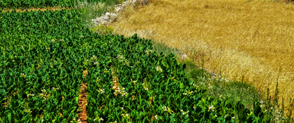

Organic farming - Future-ready agritech
Grow with color, clarity, and modern precision.
AgriNova pairs the warmth of real farm life with sharp analytics - track soil, weather, and yield from one colorful dashboard built for growers.


Organic
Certified
Why growers choose AgriNova
Everything your farm needs, in one bright place.
Live dashboard
Watch yield, soil moisture, and weather update in real time, all from one screen.
Smart crop care
Tailored irrigation and nutrition plans for every crop variety you grow.
Weather-ready
Stay a step ahead of rainfall, frost, and heat with field-level forecasting.
Explore the experience
Choose the section that fits your next farm goal.
Dashboard
See your farm's yield, soil, and water analytics at a glance.
Demos
Preview interactive farm experiences and smart agriculture tools.
Services
Explore consultations, onboarding, and long-term farm support.
Shop
Browse practical products and tools built for day-to-day farm work.
Blog
Read seasonal advice, field stories, and sustainable farming updates.
Pages
Access support pages that guide visitors through the site with ease.
Login
Sign in to continue exploring your farm dashboard and account details.
Ready to see your farm in full color?
Jump into the dashboard and watch your fields, water use, and yield trends come to life.
Login to open dashboardWhy choose us
Complete agriculture support in one modern website.
AgriNova brings crop guidance, market access, soil planning, sustainability ideas, and farmer stories together so visitors can understand your brand quickly and clearly.
Season-first planning
Detailed seasonal guidance helps farmers prepare fields, choose crops, manage irrigation, and reduce avoidable losses.
Market-ready growth
Clear product, shop, and market sections help connect farm output with buyers, local communities, and sustainable supply chains.
Trust-building pages
Mission, testimonials, gallery, and stories pages add depth, proof, and personality to the agriculture platform.